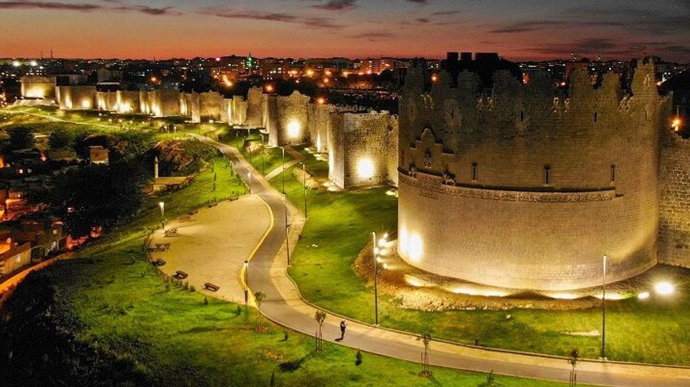
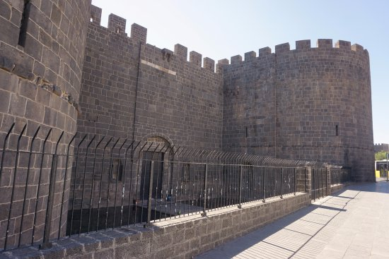
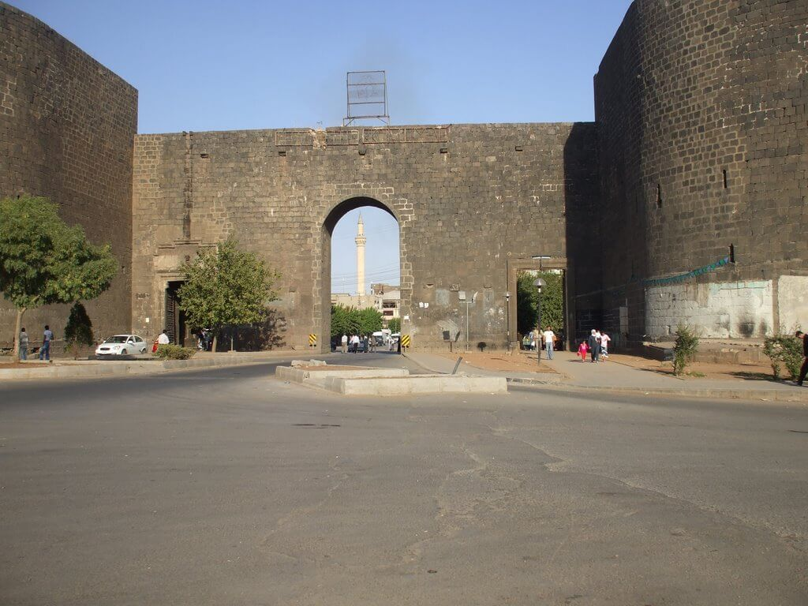
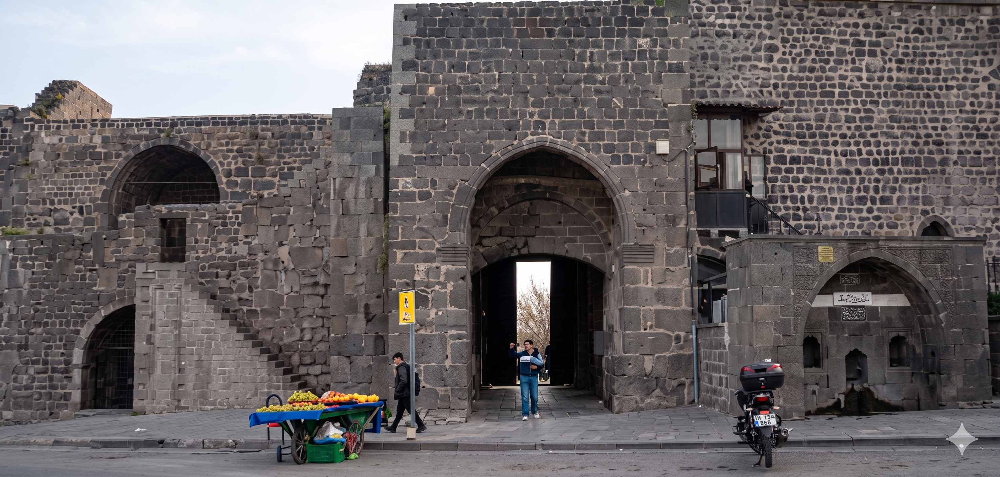
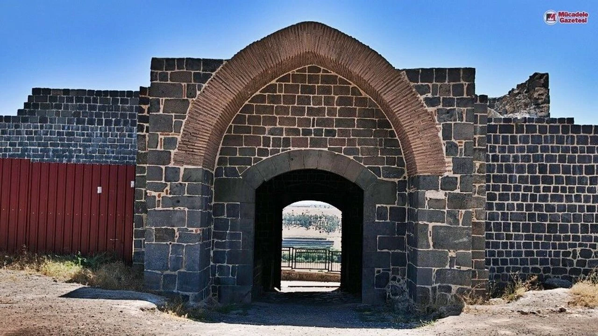
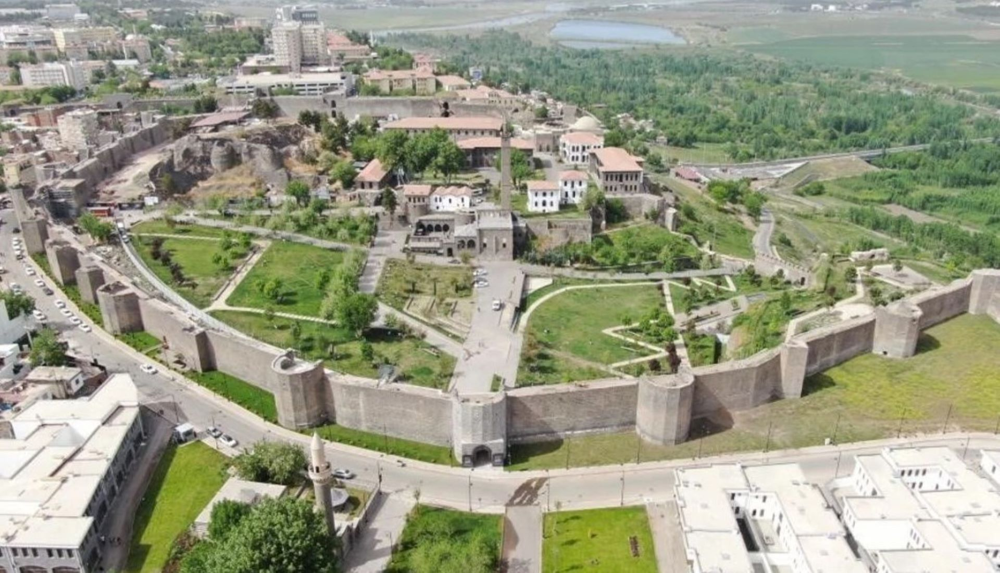

Tarihi
Diyarbakır Surları, yaklaşık 9.000 yıllık geçmişiyle insanlık tarihinin en eski savunma yapılarından biridir. İlk olarak MÖ 3000-4000 yıllarında Hurriler tarafından bugünkü İçkale bölgesinde inşa edilmiştir.
Surların bugünkü halini büyük ölçüde MS 349 yılında Roma İmparatoru II. Constantius şekillendirmiştir. Sonraki yüzyıllarda Bizans, Emevi, Abbasi, Mervaniler, Selçuklular, Artuklular ve Osmanlılar dönemlerinde sürekli onarılarak günümüze ulaşmıştır.
4 Temmuz 2015'te Almanya'nın Bonn kentinde yapılan UNESCO Dünya Miras Komitesi toplantısında, Diyarbakır Surları ve Hevsel Bahçeleri birlikte Dünya Kültür Mirası listesine alınmıştır.

Rakamlarla Surlar
Yapısal Özellikler
| Özellik | Detay |
|---|---|
| Uzunluk | Yaklaşık 5.8 km (dış surlar) |
| Yükseklik | 10 – 12 metre |
| Genişlik | 3 – 5 metre |
| Yapı | İç Kale ve Dış Kale olmak üzere iki bölüm |
| Burç Sayısı | 82 adet gözetleme ve savunma burcu |
| İlk İnşa | MÖ 3000 – 4000 (Hurriler dönemi) |
| UNESCO | 4 Temmuz 2015 – Dünya Kültür Mirası |
Surların Dört Kapısı
Bu kapılar sadece birer geçiş noktası değil; kentin dış dünyayla kurduğu askeri, ticari ve kültürel ilişkilerin simgesidir.

Dağ Kapı (Harput Kapısı)
Surların kuzey yönündeki ana girişidir. İki silindirik burç arasında yer alan bu kapı, adını kuzeyindeki dağlık bölgeden alır. Harput'a (bugünkü Elazığ) giden yol buradan başladığı için "Harput Kapısı" olarak da bilinir.
Tarih boyunca kentin en işlek kapılarından biri olmuş, ticaret kervanlarının şehre girdiği ana güzergah üzerinde konumlanmıştır. Günümüzde de şehrin en hareketli bölgelerinden birindedir.

Urfa Kapı (Rum Kapısı)
Kentin batısında yer alan bu kapı, Şanlıurfa yönüne açıldığı için bu adla anılır. Artuklu döneminde Hükümdar Sultan Mehmet tarafından onarılmış, üzerine insan ve hayvan figürleri bulunan demir kapı kanatları eklenmiştir.
Osmanlı döneminde "Saltanat Kapısı" olarak da bilinirdi. Rivayete göre padişahın sefer zamanlarında açılıp, sefer bitince tekrar kapatılırdı. Kapının diğer adı olan "Rum Kapısı" ise Batı Anadolu (Rum diyarı) yönüne bakmasından gelir.

Mardin Kapı (Tell Kapısı)
Surların güney tarafında yer alan bu kapı, Mardin'e giden yolun başlangıç noktası olduğu için bu ismi taşır. "Tell Kapısı" adı ise yakınındaki höyüklerden (tell) gelmektedir.
Güney Mezopotamya'ya açılan bu kapı, tarih boyunca Suriye ve Irak'a uzanan ticaret yollarının geçiş noktası olmuştur. Kapının çevresinde hâlâ tarihi dokunun izlerini görmek mümkündür.

Yeni Kapı (Su Kapısı / Dicle Kapısı)
Surların doğu tarafında yer alan bu kapı, kenti Dicle Nehri'ne bağlar. Basık kemerli ve tek girişli yapısıyla diğer kapılardan ayrılır. "Su Kapısı" veya "Dicle Kapısı" olarak da adlandırılır.
Halk bu kapıdan geçerek Dicle kıyısına ve Hevsel Bahçeleri'ne ulaşırdı. Nehirden su taşımak, bahçelerde tarım yapmak için kullanılan bu kapı, şehrin yaşam damarı niteliğindeydi.
Önemli Burçlar
Keçi Burcu
Surların en büyük ve en eski burcudur. On bir kemeri bulunan iki katlı yapısıyla diğer burçlardan farklıdır. İçindeki mekanları ve mimari detaylarıyla adeta küçük bir kale görünümündedir. Roma dönemine tarihlenir.
Selçuklu Burcu (Ulu Beden)
1088 yılında Büyük Selçuklu Sultanı Melikşah'ın emriyle, bina ustası Selame oğlu Urfalı Muhammed tarafından inşa edilmiştir. Sultan, yapım masraflarını kendi kişisel hazinesinden karşılamıştır.
Galeri
